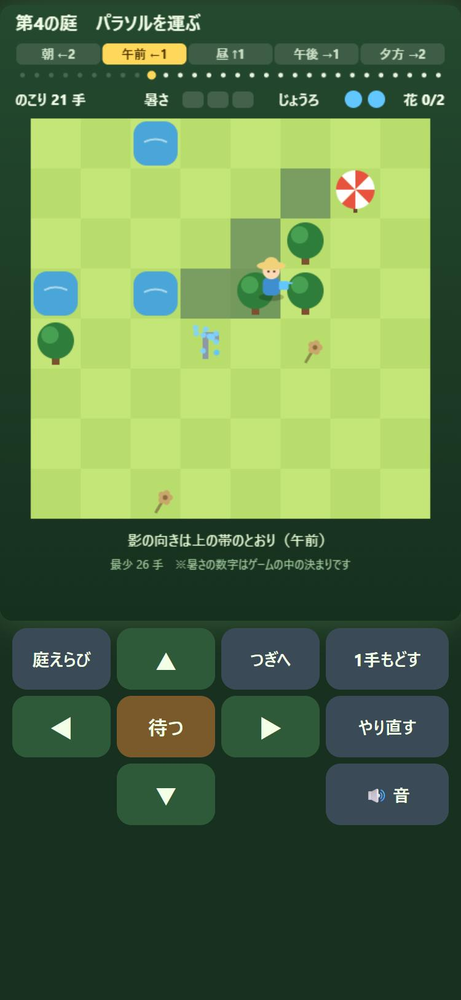
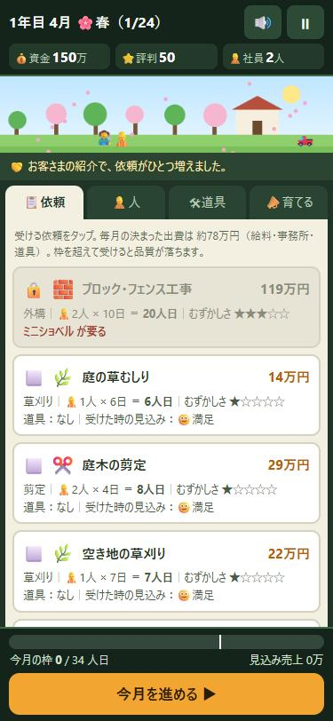
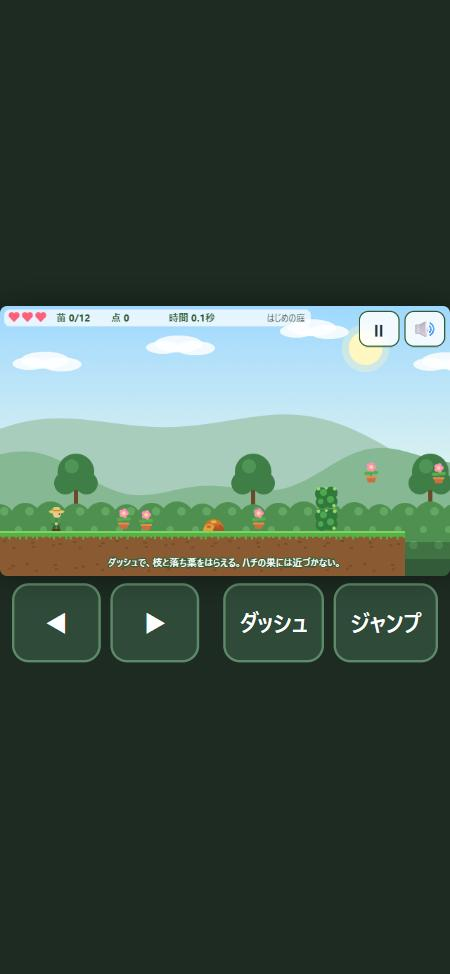
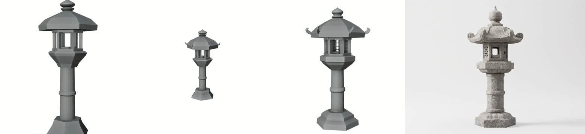
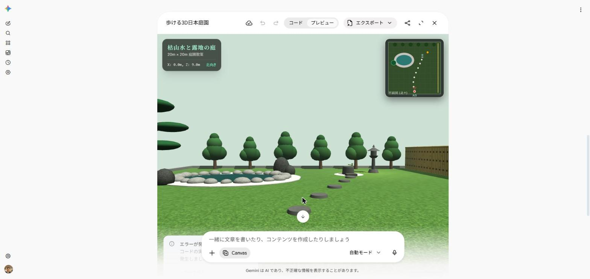
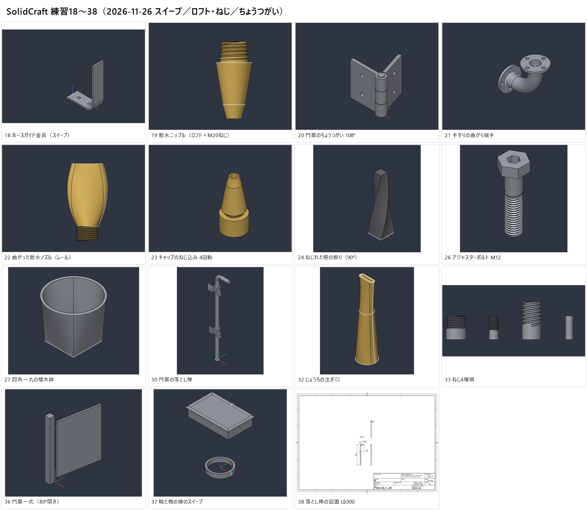

11月26日の成果
YouTube の動画を AI が分析し、その内容で練習して作った物です。ゲームは、そのままタップで遊べます。
1. ゲーム3本（動画で見た仕組みを借りて作った別のゲーム）

ターン制パズル・全5面
庭の日かげ番
蛇口で水をくんで、しおれた花に届けます。日なたは続けて2歩まで。木の影は太陽といっしょに動きます。

経営・全24か月
造園会社タイクーン
毎月の依頼から受ける物を選び、かせいだお金で人と道具に投資します。受けすぎると品質が落ちます。

2Dアクション・3面＋面を作る道具
庭師の横スクロール
走る・2段ジャンプ・ダッシュで、伸びすぎた枝と落ち葉を払って門まで。自分で面も作れます。
金額・暑さなどの数字は、すべてゲーム用の作り物です。実際の仕事の相場や決まりとは関係ありません。音が出ます（曲は下の「3.」の物）。
2. Gemini で 3D
Blender 用の Python を Gemini に書かせる
横に動かして見られます。
春日灯籠（3回の直し）
左から 1回目・2回目・3回目。いちばん右は、先に作った「完成予想の絵」です。予想の絵と見比べて直させると、笠の反り・火袋の窓と格子・基礎の段が付きました。

平面図の文から、歩ける 3D
枯山水と露地の庭（20m×20m）

平面図を文で書いて頼むと、置き場所は数字どおりになりました。
3D の庭を開く 歩く操作はキーボード（W A S D・矢印）向けです。スマホでは見るだけになる事があります。3. Gemini で音楽（歌なしの6曲）
頼み方を変えて作った曲です。聞き比べてみてください。
Petals on the Basin （和風パズルのBGM・「ループして」と書いた版）
Moss and Bamboo （同じ頼み方で「ループ」と書かない版）
Koi Pond Solitude （同じ内容を英文で頼んだ版）
Steps on the Garden Path （絵本のBGM・楽器だけ指定）
The Little Red Gate （15秒ごとに 穏やか→不安→緊張→ほっと、と指定）
Tiptoeing Through Tall Grass （絵を1枚わたして「この絵に合う曲」）
4. SolidCraft（3D CAD）の練習
スイープ・ロフト・ねじ・組み立て
約38分で21個

ホースガイド金具、散水ニップル、門扉のちょうつがい、植木鉢、じょうろの注ぎ口、門扉一式、落とし棒の図面 など。ちょうつがいが当たる角度は、手計算と一致しました。
5. Muse（Meta の AI）の検証
- 作った物：資材の底値メモ／道具・機械の週の点検表／毎朝6時の天気のお知らせ
- 「予約はしないで」と頼むと、候補を比べた所で止まって聞いてくれた（動画のとおり）
- 4つ頼んで、使える量は 0%→4% 減った
作り方の流れ：AIに「これを勉強して」と頼む流れ